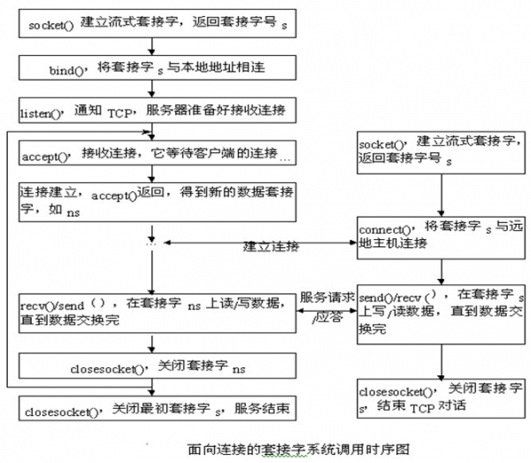

网络编程基础
廖也晴PSOP-SZOP
Hi: liao_yeqing
liaoyeqing@baidu.com
摘要：本文总结了网络编程的一些基础知识，并介绍了百度现在通用的几种同步和异步服务器连接模型。网络编程涉及内容较广，分享本文，期望能与大家讨论、共享其中的心得。
关键词：TCP/IP, Socket, 同步与异步模型, xpool, cpool, epoll
一、TCP/IP组包方式
网络中传输的TCP/IP协议数据包的格式如图1所示。
图1
其中以太网首部包含了包的MAC地址信息，IP首部包含包来源和前往的IP信息，TCP首部包含了端口信息。前三部分都是在内核中实现。应用数据是应用层socket编程中发送和接收的数据。
二、TCP编程基本函数和TCP状态转移
tcp socket的基本函数和对应的状态转移图如图2和图3所示：

图2
图2所示是对应调用图1中相关的TCP socket函数后出现的TCP状态转移图，可以通过netstat命令来查看。其中CLOSED为起始点，服务器通过调用socket，bind, listen函数，进入LISTEN状态。
图3
三次握手中客户端发起连接，发送SYN给服务器端，进入SYN_SENT，服务器接收到SYN，进入SYN_RCVD。建立好连接后进入ESTABLISHED。当被动关闭时会出现CLOSE_WAIT状态，当主动关闭或者同时关闭时，服务器会进入著名的TIME_WAIT状态。TIME_WAIT存在的好处是，可靠地实现TCP全双工连接的终止，允许老的重复分节在网络中消逝。TIME_WAIT状态的坏处是会占用端口。TIME_WAIT消失时间是2MSL。MSL(最大分段生存期)指明TCP报文在Internet上最长生存时间，每个具体的TCP实现
都必须选择一个确定的MSL值。RFC 1122建议是2分钟，但BSD传统实现采用了30秒。 TIME_WAIT 状态最大保持时间是2 * MSL，也就是1-4分钟。可以通过设置socket的SO_LINGER标志来避免socket进入TIME_WAIT状态，这也是很多服务器的做法。
三、非阻塞I/O
默认的sokcet函数都是阻塞的，阻塞是指等待socket函数操作完成，函数才返回。非阻塞是指调用socket函数立即返回，但不保证函数的操作成功。将socket设为非阻塞IO，是通过设置O_NONBLOCK这个socket选项实现的。通常accept, connect, recv, send几个函数的非阻塞实现和设置为非阻塞后的效果如下。
(1) Accept: 当有一个已完成的连接准备好被接收时，select将作为可读描述字返回该连接的监听套接口，这时调用accept是非阻塞的。
(2) Connect: 除非client和server在同一台机器，否则都会返回EINPROGRESS错误，但三次握手已经发起，至少等待一个RTT时间连接才建立成功。成功时，套接字可写，失败时既可读又可写。
(3) Recv类: 对于TCP套接口至少有一个字节数据可读，对于UDP有一个完整的数据包可读，否则返回EWOULDBLOCK错误
四、同步与异步服务器模型
网络连接模型主要分为同步模型和异步模型。同步模型中请求发送完毕后，不释放线程或者进程，等待对端回复或者超时后释放线程（或进程）；目前ulib库使用为同步模型，采用线程池来管理一次会话，优点是实现简单，问题定位容易，无需维护状态机，缺点是如果后端出现问题将导致线程池耗尽，无法处理请求。异步模型中client发送请求后不等待对方回复或者超时，直接释放独立运行单元，等待对端数据响应事件后通过回调来处理，优点为不阻塞调度单元，可以充分利用cpu进行处理，提高整个服务的吞吐量；缺点为编程较为复杂，需要维护状态机。同步和异步仅仅是关于所关注的消息如何通知的机制,而不是处理消息的机制.也就是说,同步的情况下,是由处理消息者自己去等待消息是否被触发,而异步的情况下是由触发机制来通知处理消息者。
在异步服务器中，注册事件最重要的几个I/O多路轮询函数是select, poll和epool。本质而言，poll和select的共同点就是，对全部指定设备做一次poll，当然这往往都是还没有就绪的，那就会通过回调函数把当前进程注册到设备的等待队列，如果所有设备返回的掩码都没有显示任何的事件触发，就去掉回调函数的函数指针，进入有限时的睡眠状态，再恢复和不断做poll，再作有限时的睡眠，直到其中一个设备有事件触发为止。select/poll每次调用都会线性扫描全部的集合，导致效率呈现线性下降。但是epoll不存在这个问题，它只会对"活跃"的socket进行操作，这是因为在内核实现中epoll是根据每个fd上面的callback函数实现的。那么，只有"活跃"的socket才会主动的去调用 callback函数，其他idle状态socket则不会，在这点上，epoll实现了一个"伪"AIO，因为这时候推动力在os内核。Epool编程通常的模式如下：
struct epoll_event ev,*events;
for(;;) {
nfds =epoll_wait(kdpfd, events, maxevents, -1);
for(n = 0; n <nfds; ++n) {
if(events[n].data.fd == listener) {
client =accept(listener, (struct sockaddr *) &local,
&addrlen);
if(client< 0){
perror("accept");
continue;
}
setnonblocking(client);
ev.events= EPOLLIN | EPOLLET;
ev.data.fd= client;
if(epoll_ctl(kdpfd, EPOLL_CTL_ADD, client, &ev) < 0) {
fprintf(stderr, "epoll set insertion error: fd=%d0, client);
return-1;
}
}
else
do_use_fd(events[n].data.fd);
}
}
主要通过epoll_create,epoll_wait和epoll_ctl三个函数来实现服务器事件的监听。需要注意的是epoll的ET模式必须与非阻塞IO一起用，否则程序可能会一直阻塞在读或者写操作上。五、百度通用同步和异步服务器连接模型简介
百度现在通用的几种同步和异步服务器连接模型有xpool, cpool, eppoll。
（1）xpool是一种领导者追随者模型，是一种同步模型。在xpool连接模型中，一个主线程listen, 多个工作线程同时accept竞争一个可用的连接，拿到连接后就自己进行处理。为了避免在低版本的内核中出现惊群现象，多个线程的accept会加锁处理。xpool一般认为在短连接的时候效果比较好，但如果同一时候连接数过多会造成没有工作线程与客户端进行连接，客户端会出现大量的连接失败。
（2）cpool是一种生产者消费者模型，是一种经典的异步模型。在cpool连接模型中，采用select通知事件触发。主线程通过listen socket注册的读事件触发不断的建立连接；同时通过监听已经建立连接的socket的可读事件来处理读事件，如果fd可读, 则将fd放入等待队列，多个工作线程从等待队列里获取连接进行处理。在大压力下很少出现像xpool那样出现连接失败的问题。
（3）epoll是将cpoll中的select改成用epoll监听的异步模型。百度以前通用编程框架中的ependingpool 就是采用epoll模型。 ependingpool使用epoll替代了ul_pendingpool中的select。新版本增加了对监听线程的事件回调，使用读写事件的回调+非堵塞IO，可以实现由一个线程异步接收和发送数据，起多线程对数据进行处理，适用于大并发量的情况。
目前还有包括日文云输入法等的产品线使用ependingpool。Ependingpool模型图如下：

图4
如图4所示，ependingpool中主线程通过epool建立新的连接，和将出现读事件的socket加入队列中。工作线程通过条件变量的方式从队列中取socket进行处理。
目前百度通用的ub编程框架中封装了可选的连接池模型，支持xpool, cpool, epoll三种连接模型的可选。
全文完。